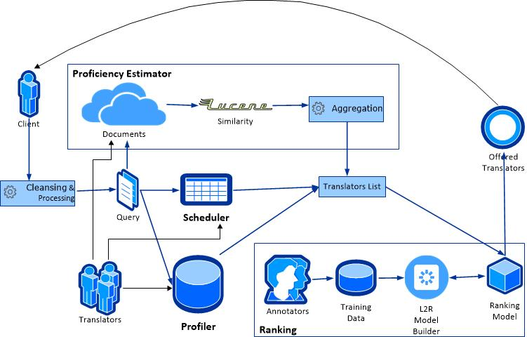

Applying Learning To Rank and Document Aggregation Techniques on a
Translator-Expert Retrieval Framework
,
Abstract
Expertise Retrieval, whose task is to suggest people with relevant expertise regarding to a query, has received increasing interest in recent years. In this paper, we propose an Expert Retrieval platform narrowed down to translators as experts. Issues and obstacles during design and development as well as acquired solutions and results are reported. Ranking the translators using Learning to Rank as well as documents' aggregation functions are two main issues which are specifically studied in the paper.
1 Introduction
The goal of expertise retrieval is to link humans to expertise areas, and vice versa. In other words, the task of expertise retrieval is to identify a set of persons with relevant expertise for the given query [
, ,].
With the development of information retrieval (IR) techniques, many research efforts in this field have been made to address high-level IR and not just traditional document retrieval, such as entity retrieval and expertise retrieval [
, ]. The launch of the Expert Finding task at TREC has generated a lot of interest in expertise retrieval, with rapid progress being made in terms of modeling, algorithms, and evaluation aspects [
, ,
, ].
Two principal approaches are proposed by
[] based on probabilistic language modeling techniques. They were formalized as so-called candidate models and document models. The candidate-based approach, also referred to as profile-based method, builds a textual representation of candidate experts and then ranks them based on the query. The document models first find documents relevant to the topic and then locate the experts associated with these documents [
, ].
Ranking techniques are mostly one of the essential parts of IR frameworks. In recent years, Learning to Rank (L2R) has been studied extensively specially for document retrieval. It refers to machine learning techniques for training the model in a ranking task [
, ]. In essence, expert search is a ranking problem and thus the existing L2R techniques can be naturally applied to it [
, ].
As well as ranking techniques, aggregation functions have a significant effect on the performance of IR systems. Aggregate tasks are those where documents' similarities are not
the final outcome, but instead an intermediary component. In expert search, a ranking of candidate persons with relevant expertise to a query is generated after aggregation of their related documents [
, ].
This paper addresses the problem of searching translators as experts. We have applied Learning to Rank in a candidate-based approach. Additionally, different aggregation algorithms related to documents of translators have been studied.
The remaining of the paper is organized as follows. In Section
II, the Translator-Expert Retrieval framework is described in detail. Then, Section
III explains methods used in the study. In Section
IV, we report the result of applied methods on the framework. Finally, we conclude the study in Section
V.
2 Case Study
The data flow of expert searching is depicted in Figure
1. The client submits a document and searches for translators with a specific target language. Based on query document, the framework figures out offered price, delivery time, proficiency of translators and number of cooperation times related to each translator. The result is processed by a ranking system and the most related translators are offered to the client.
As it is shown in Figure
1, the essential components of the framework are
Ranking,
Proficiency Estimator,
Scheduler and
Profiler.

Figure 1: System Data Flow
system uses L2R to return the most related translators to the client. The training data is provided by a group of evaluators who are familiar with business of company using an evaluation system. The evaluation suggests three translators and by comparing between their factors, the evaluators choose one. In order to prevent bias in evaluation, the translators are suggested randomly and without name and picture. Applied learning to rank methods and results are described in Section
III.
Proficiency Estimator stores the previous-translated documents in the cloud and indexes them using Lucene library. The similarity between query and indexed documents is used as a base for estimation of translator's proficiency. In order to find proficiency value, the similarity scores are aggregated. The applied aggregation function is described in Section
IV.
Scheduler system figures out the delivery time based on timetable of translators. The scheduler builds a special data structure to calculate the response time. The detail of the process is out of scope of the paper. At last,
Profiler accumulates personal information, translators' preferences as well as offered price and translation duration per word.
Beside translator, a proofreader selected by the client revises the final translation. As well as reviewing, the proofreader assesses the quality of translation from different points of view (grammar, style, accuracy, content and language). The assessment is defined as a value between 1 (very bad) and 5 (perfect). As it is discussed in Section
IV, it is used to evaluate aggregation algorithms for translator's proficiency.
3 Methods
In this section, we study different methods and algorithms regarding to Aggregation Functions and Learning to Rank.
3.1 Aggregation Functions
The aggregation function has a significant impact on the performance of Expert Retrieval system. As a usual scenario in expert retrieval systems, first each document related to an expert is scored and ranked regarding to query. Then, the top N document scores associated with a candidate expert are aggregated in order to rank the experts.
The effect of different features on aggregation function is studied in
[]. As it is shown, number of documents is tightly related such that the performance of different queries are optimal for different values of N. Comparing query-based features using statistical measures, it inferred that the features may not, in general, be able to predict the optimal number of documents to aggregate for each query. Individual Expert Features is discussed in the next step. It is shown that relevant experts are associated with a higher ranked document than non-relevant experts. More interestingly, relevant experts are associated with less documents on average.
[] looks to expert search as a voting problem, where documents vote for the candidates with relevant expertise. Eleven data fusion as well as three statistically different document weighting were tested. In practice, the approach considers both number of documents and expert features regarding to the ranking score of the documents. The results show that while some of adapted voting techniques are most likely outperform others, the proposed approach is effective when using appropriate one.
Later on, focusing on related features discussed before
[] introduces a new aggregation method. It uses genetic programming to learn a formula for the weights of document associations within the candidate profiles. The formula denoted as GP2 is as follows:
GP2 = /(
where R is the rank of the document in the initial ranking and no_docs
xi is the total number of documents associated with expert x
i.
3.2 Learning To Rank
Learning to rank refers to machine learning techniques for training the model in a ranking task. Due to its importance, learning to rank has been drawing broad attention in the machine learning community recently.
In learning to rank approach, the ranking problem is transformed to classification, regression and ordinal classification, and existing methods and techniques for solving machine learning problems are applied. As
[] points out the relation between learning to rank and ordinal classification, in ranking, one cares more about accurate ordering of objects, while in ordinal classification, one cares more about accurate ordered-categorization of objects.
One primitive step in accumulating data required for learning to rank, is relevance judgment done by human annotators. introduces three main strategies as follows.
- Relevance degree: It specifies whether an object is relevant or not to the query. It can be either in binary judgment or by specifying the degree of relevance (e.g., Perfect, Excellent, Good, Fair, or Bad).
- Pairwise preference: A pair of objects are compared in order to specify which one is more relevant with regards to a query.
- Total order: The total order of all object with respect to a query is specified.
Among the three mentioned kinds of judgments, since the first is the easiest to obtain, it is the most popularly used judgment. While the third kind is more accurate but tedious for human annotators.
The learning to rank techniques are categorized in three main groups:
Pointwise,
Pairwise and
Listwise.
In the pointwise approach, the ranking problem is transformed to classification, regression or ordinal classification. Therefore, the group structure of ranking is ignored in this approach [
, ].
The pairwise approach transforms the ranking problem into pairwise classification or regression. In fact, it cares about the relative order between two documents. In the pairwise approach, the group structure of ranking is also ignored [
, ]. Here is a brief explanation of some of widely used pairwise algorithms:
- RankNet []: Widely applied by commercial search engines, it uses gradient descent method and neural network to model the underlying ranking function.
- RankBoost []: It adopts AdaBoost algorithm for the classification over document pairs.
- LambdaRank []: It considers the evaluation measures to set its pair weight. In particular, the evaluation measures (which are position based) are directly used to define the gradient with respect to each document pair in the training process.
- LambdaMART []: It combines the strengths of boosted tree classification and LambdaRank.
The listwise approach takes the entire set of documents associated with a query in the training data as the input and predicts their ground truth labels []. The group structure of ranking is maintained and
ranking evaluation measures can be more directly incorporated into the loss functions in learning [
, ]. In the following, two common listwise algorithms are briefly discussed:
- AdaRank []: It applies the evaluation measures on the framework of Boosting and focuses on effectively optimization.
- ListNet []: It uses different probability distributions in order to define the loss function.
As the different data-set are compared in , listwise techniques are in general the most effective among the others. However, the choice of the learning evaluation measure and the rank cutoff may have a noticeable impact on the effectiveness of the learned model [].
A highly important point in all kinds of information retrieval systems is evaluation of results. The evaluation on the performance of a ranking model is carried out by comparison between the ranking lists output by the model and the ranking lists given as the ground truth [
, ].Some common IR evaluation methods like Mean average precision (MAP), [Normalized] Discounted Cumulative Gain ([N]DCG), Mean Reciprocal Rank (MRR) are also widely user in leaning to rank evaluation. Among the mentioned metrics, DCG/NDCG is the only one used for graded relevance.
Recently, have proposed a new evaluation metrics called Expected Reciprocal Rank (ERR) which claims to model user's satisfaction with search results better than the DCG metric. addresses the underlying independence assumption of DCG that a document in a given position has always the same gain and discount independently of the documents shown above it. It asserts that based on research on modeling user click behavior [,], the likelihood a user examines the document at rank i is dependent on how satisfied the user was with previously observed documents in the ranked list. In other words, it assumes that a user is more likely to stop browsing if they have already seen one or more highly relevant documents. By presenting ERR formula in ], it claims that results reflects real user browsing behavior better and quantifies user satisfaction more accurately than DCG.
4 Apply The Methods and Results
In this section, we applied different approaches on the platform. By comparing the methods, we aim to discover the most appropriate one regarding to the project's characteristics and data.
4.1 Aggregation Functions
In order to compare different aggregation functions, similar to
[] three algorithms are selected. GP2 as well as Top1 and Top5 which are two common forms of TopN aggregation algorithm. TopN refers to algorithm that summarizes the N top documents (i.e. Top1 only using the top associated document to rank the candidates).
Feedbacks of proof-readers after every translation are used as a basis for evaluating the algorithms. Since feedbacks are a measure for quality of translation, the more similar the ranking of algorithms to feedbacks are the better it is.
In order to calculate the correlation value, we applied Spearman Rank Order and Kendall Rank Correlation as two common methods. Table
I shows the results of Spearman correlation coefficient (r
s) and Kendall's tau coefficient (τ) using 181 records of purchased orders. Table
II represents the Significance Test of both methods calculated by R.
As it is usual in many cases, the coefficient value of Spearman is slightly higher than Kendall's. The outcome shows an approximately weak correlation between aggregation functions and feedbacks of proof-readers. Regarding to P-Value of significance test shown in Table
II, a meaningful relation between GP2 and feedbacks can be considered. Top1 which has the worst values in the table shows a meaningless and near random correlation though.
Comparing the algorithms, GP2 outperforms the others in both correlation tests. In comparison to Top1, Top5 has slightly better performance. The results are also nearly the same when comparing based on language-pairs.
Table 1: Correlation Test Between Algorithms and Proof-readers' Feedbacks
Table 2: P-Value of Significance of Correlation Test Algorithms
4.2 Learning To Rank
TODO
Table 3: Results of Applying Learning to Rank Methods based on NDCG and ERR evaluation measures
5 Conclusion
TODO
References
- [ ]
-
Balog, Krisztian, Yi Fang, Maarten de Rijke, Pavel Serdyukov, and Luo Si.
Expertise Retrieval - Foundations and Trends in Information
Retrieval 6, pages 127-256.
Number 2-3. 2012.
- [ ]
-
K. Balog, T. Bogers, L. Azzopardi, M. de Rijke, and A. van den Bosch.
Broad expertise retrieval in sparse data environments.
SIGIR, 2007.
- [ ]
-
Y. Cao, J. Liu, S. Bao, and H. Li.
Research on expert search at enterprise track of trec 2005.
TREC, 2005.
- [ ]
-
Cummins, Ronan, Mounia Lalmas, and Colm O'Riordan.
Learning aggregation functions for expert search.
ECAI, 2010.
-
Deng, Hongbo, Irwin King, and Michael R. Lyu.
Enhanced models for expertise retrieval using community-aware
strategies.
Systems Man and Cybernetics Part B: Cybernetics IEEE
Transactions, 2012.
- [ ]
-
Hang L. I.
A short introduction to learning to rank.
IEICE TRANSACTIONS on Information and Systems, 2011.
- [ ]
-
Macdonald, Craig, and Iadh Ounis.
Voting for candidates: adapting data fusion techniques for an expert
search task.
the 15th ACM international conference on Information and
knowledge management, 2006.
- [ ]
-
Macdonald, Craig, and Iadh Ounis.
Learning models for ranking aggregates.
Advances in Information Retrieval. Springer Berlin Heidelberg,
2011.
File translated from
TEX
by
TTH,
version 4.03.
On 21 Feb 2014, 09:10.